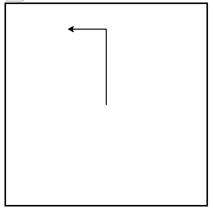

1.5. Python as an Object Oriented Language¶
In this section, we will explore an import detail of Python: all values in Python are objects. Although Python allows programs to be written in many programming paradigms (e.g. imperative, functional), Python is built using the object-oriented paradigm. Thus, regardless of the types of programs that you write, it is important to understand the basics of working with objects and methods.
Note
This textbook does not focus on object-oriented programming, but there are sections in the appendix that provide details about writing your own classes/objects in Python.
Next, we will use the Python turtle module to gain familiarity in working
with object.
1.5.1. Hello Little Turtles!¶
There are many modules in Python that provide very powerful features that we can use in our own programs. Some of these can send email or fetch web pages. Others allow us to perform complex mathematical calculations. In this chapter we will introduce a module that allows us to create a data object called a turtle that can be used to draw pictures.
Turtle graphics, as it is known, is based on a very simple metaphor. Imagine that you have a turtle that understands English. You can tell your turtle to do simple commands such as go forward and turn right. As the turtle moves around, if its tail is down touching the ground, it will draw a line (leave a trail behind) as it moves. If you tell your turtle to lift up its tail it can still move around but will not leave a trail. As you will see, you can make some pretty amazing drawings with this simple capability.
1.5.2. Our First Turtle Program¶
Let’s try a couple of lines of Python code to create a new turtle and start
drawing a simple figure like a rectangle. We will refer to our first turtle
using the variable name alex, but remember that you can choose any name you
wish as long as you follow the naming rules from the previous chapter.
The program as shown will only draw the first two sides of the rectangle. After line 4 you will have a straight line going from the center of the drawing canvas towards the right. After line 6, you will have a canvas with a turtle and a half drawn rectangle. Press the run button to try it and see.
Here are a couple of things you’ll need to understand about this program.
The first line tells Python to load a module named turtle. That module
brings us two new types that we can use: the Turtle type, and the Screen
type. The dot notation turtle.Turtle means “The Turtle type that is
defined within the turtle module”. (Remember that Python is case sensitive,
so the module name, turtle, with a lowercase t, is different from the type
Turtle because of the uppercase T.)
We then create and open what the turtle module calls a screen (we would prefer to call it a window, or in the case of this web version of Python simply a canvas), which we assign to variable wn. Every window contains a canvas, which is the area inside the window on which we can draw.
In line 3 we create a turtle. The variable alex is made to refer to this turtle. These first three lines set us up so that we are ready to do some drawing.
In lines 4-6, we instruct the object alex to move and to turn. We do this by invoking or activating alex’s methods — these are the instructions that all turtles know how to respond to.
Complete the rectangle ...
Modify the program by adding the commands necessary to have alex complete the rectangle.
Check your understanding
-
intro-12-168: Which direction does the Turtle face when it is created?
- (A) North
- Some turtle systems start with the turtle facing north, but not this one.
- (B) South
- No, look at the first example with a turtle. Which direction does the turtle move?
- (C) East
- Yes, the turtle starts out facing east.
- (D) West
- No, look at the first example with a turtle. Which direction does the turtle move?
An object can have various methods — things it can do — and it can also have attributes — (sometimes called properties). For example, each turtle has a color attribute. The method invocation alex.color(“red”) will make alex red and the line that it draws will be red too.
The color of the turtle, the width of its pen(tail), the position of the turtle within the window, which way it is facing, and so on are all part of its current state. Similarly, the window object has a background color which is part of its state. Quite a number of methods exist that allow us to modify the turtle and window objects.
In the example below, we show just show a couple and have only commented those lines that are different from the previous example. Note also that we have decided to call our turtle object tess.
The last line plays a very important role. The wn variable refers to the window shown
above. When we invoke its exitonclick method, the program pauses execution and waits for the user to click the mouse somewhere in the window.
When this click event occurs, the response is to close the turtle window and
exit (stop execution of) the Python program.
Each time we run this program, a new drawing window pops up, and will remain on the screen until we click on it.
Extend this program ...
- Modify this program so that before it creates the window, it prompts the user to enter the desired background color. It should store the user’s responses in a variable, and modify the color of the window according to the user’s wishes. (Hint: you can find a list of permitted color names at http://www.w3schools.com/html/html_colornames.asp. It includes some quite unusual ones, like “PeachPuff” and “HotPink”.)
- Do similar changes to allow the user, at runtime, to set tess’ color.
- Do the same for the width of tess’ pen. Hint: your dialog with the
user will return a string, but tess’
pensizemethod expects its argument to be anint. That means you need to convert the string to an int before you pass it topensize.
1.5.3. The dir and help functions¶
You can explore the available methods using the dir and help
functions. First, perform dir on an object to see all of the available
methods.
In [1]: import turtle
In [2]: tess = turtle.Turtle()
In [3]: dir(tess)
Out[3]:
['DEFAULT_ANGLEOFFSET',
'DEFAULT_ANGLEORIENT',
'DEFAULT_MODE',
'START_ORIENTATION',
'__class__',
'__delattr__',
'__dict__',
'__dir__',
'__doc__',
'__eq__',
'__format__',
'__ge__',
'__getattribute__',
'__gt__',
'__hash__',
'__init__',
'__le__',
'__lt__',
'__module__',
'__ne__',
'__new__',
'__reduce__',
'__reduce_ex__',
'__repr__',
'__setattr__',
'__sizeof__',
'__str__',
'__subclasshook__',
'__weakref__',
'_angleOffset',
'_angleOrient',
'_cc',
'_clear',
'_clearstamp',
'_color',
'_colorstr',
'_creatingPoly',
'_degreesPerAU',
'_delay',
'_drawing',
'_drawturtle',
'_fillcolor',
'_fillitem',
'_fillpath',
'_fullcircle',
'_getshapepoly',
'_go',
'_goto',
'_hidden_from_screen',
'_mode',
'_newLine',
'_orient',
'_outlinewidth',
'_pen',
'_pencolor',
'_pensize',
'_poly',
'_polytrafo',
'_position',
'_reset',
'_resizemode',
'_rotate',
'_screen',
'_setDegreesPerAU',
'_setmode',
'_shapetrafo',
'_shearfactor',
'_shown',
'_speed',
'_stretchfactor',
'_tilt',
'_tracer',
'_undo',
'_undobuffersize',
'_undogoto',
'_update',
'_update_data',
'_write',
'back',
'backward',
'begin_fill',
'begin_poly',
'bk',
'circle',
'clear',
'clearstamp',
'clearstamps',
'clone',
'color',
'currentLine',
'currentLineItem',
'degrees',
'distance',
'dot',
'down',
'drawingLineItem',
'end_fill',
'end_poly',
'fd',
'fillcolor',
'filling',
'forward',
'get_poly',
'get_shapepoly',
'getpen',
'getscreen',
'getturtle',
'goto',
'heading',
'hideturtle',
'home',
'ht',
'isdown',
'isvisible',
'items',
'left',
'lt',
'onclick',
'ondrag',
'onrelease',
'pd',
'pen',
'pencolor',
'pendown',
'pensize',
'penup',
'pos',
'position',
'pu',
'radians',
'reset',
'resizemode',
'right',
'rt',
'screen',
'screens',
'seth',
'setheading',
'setpos',
'setposition',
'settiltangle',
'setundobuffer',
'setx',
'sety',
'shape',
'shapesize',
'shapetransform',
'shearfactor',
'showturtle',
'speed',
'st',
'stamp',
'stampItems',
'tilt',
'tiltangle',
'towards',
'turtle',
'turtlesize',
'undo',
'undobuffer',
'undobufferentries',
'up',
'width',
'write',
'xcor',
'ycor']
Wow! That is a lot of methods!
Note
Did you notice all of the elements that started and ended with __ (two
underscore symbols)? This is a standard Python naming convention. Methods
and attributes that are considered implementation details are named in
this way. A polite programmer is expected to ignore these items and only
use methods that are not surrounded by __. Start building a habit of
ignoring these names!
If you see a method that you would like to learn more about, use
help to see a little documentation on the method. For example, suppose that
we are interested in the tilt method of a turtle. We find out more about
this method by calling the help function on the method name.
In [4]: help(tess.tilt)
Help on method tilt in module turtle:
tilt(angle) method of turtle.Turtle instance
Rotate the turtleshape by angle.
Argument:
angle - a number
Rotate the turtleshape by angle from its current tilt-angle,
but do NOT change the turtle's heading (direction of movement).
Examples (for a Turtle instance named turtle):
>>> turtle.shape("circle")
>>> turtle.shapesize(5,2)
>>> turtle.tilt(30)
>>> turtle.fd(50)
>>> turtle.tilt(30)
>>> turtle.fd(50)
Note
Notice that we are using the method name tess.tilt, not calling the
method using parantheses!
Check your understanding
- (A) It creates a new turtle object that can be used for drawing.
- The line "alex = turtle.Turtle()" is what actually creates the turtle object.
- (B) It defines the module turtle which will allow you to create a Turtle object and draw with it.
- This line imports the module called turtle, which has all the built in functions for drawing on the screen with the Turtle object.
- (C) It makes the turtle draw half of a rectangle on the screen.
- This functionality is performed with the lines: "alex.forward(150)", "lex.left(90)", and "alex.forward(75)"
- (D) Nothing, it is unnecessary.
- If we leave it out, Python will give an error saying that it does not know about the name "turtle" when it reaches the line "wn = turtle.Screen()"
intro-12-169: Consider the following code:
import turtle
wn = turtle.Screen()
alex = turtle.Turtle()
alex.forward(150)
alex.left(90)
alex.forward(75)
What does the line “import turtle” do?
-
intro-12-170: Why do we type
- (A) This is simply for clarity. It would also work to just type "Turtle()" instead of "turtle.Turtle()".
- We must specify the name of the module where Python can find the Turtle object.
- (B) The period (.) is what tells Python that we want to invoke a new object.
- The period separates the module name from the object name. The parentheses at the end are what tell Python to invoke a new object.
- (C) The first "turtle" (before the period) tells Python that we are referring to the turtle module, which is where the object "Turtle" is found.
- Yes, the Turtle type is defined in the module turtle. Remember that Python is case sensitive and Turtle is different from turtle.
turtle.Turtle() to get a new Turtle object?
-
intro-12-171: True or False: A Turtle object can have any name that follows the naming rules from Chapter 2.
- (A) True
- In this chapter you saw one named alex and one named tess, but any legal variable name is allowed.
- (B) False
- A variable, including one referring to a Turtle object, can have whatever name you choose as long as it follows the naming conventions from Chapter 2.
- (A)

- This code would turn the turtle to the south before drawing
- (B)

- This code would turn the turtle to the west before drawing
- (C)

- This code would turn the turtle to the south before drawing
- (D)

- This code is almost correct, but the short end would be facing east instead of west.
- (E)

- Yes, the turtle starts facing east, so to turn it north you can turn left 90 or right 270 degrees.
intro-12-172: Which of the following code would produce the following image?
1.5.4. Instances — A Herd of Turtles¶
Just like we can have many different integers in a program, we can have many turtles. Each of them is an independent object and we call each one an instance of the Turtle type (class). Each instance has its own attributes and methods — so alex might draw with a thin black pen and be at some position, while tess might be going in her own direction with a fat pink pen. So here is what happens when alex completes a square and tess completes her triangle:
Here are some How to think like a computer scientist observations:
- There are 360 degrees in a full circle. If you add up all the turns that a turtle makes, no matter what steps occurred between the turns, you can easily figure out if they add up to some multiple of 360. This should convince you that alex is facing in exactly the same direction as he was when he was first created. (Geometry conventions have 0 degrees facing East and that is the case here too!)
- We could have left out the last turn for alex, but that would not have been as satisfying. If you’re asked to draw a closed shape like a square or a rectangle, it is a good idea to complete all the turns and to leave the turtle back where it started, facing the same direction as it started in. This makes reasoning about the program and composing chunks of code into bigger programs easier for us humans!
- We did the same with tess: she drew her triangle and turned through a full 360 degress. Then we turned her around and moved her aside. Even the blank line 18 is a hint about how the programmer’s mental chunking is working: in big terms, tess’ movements were chunked as “draw the triangle” (lines 12-17) and then “move away from the origin” (lines 19 and 20).
- One of the key uses for comments is to record your mental chunking, and big ideas. They’re not always explicit in the code.
- And, uh-huh, two turtles may not be enough for a herd, but you get the idea!
Check your understanding
-
intro-12-173: True or False: You can only have one active turtle at a time. If you create a second one, you will no longer be able to access or use the first.
- (A) True
- You can create and use as many turtles as you like. As long as they have different names, you can operate them independently, and make them move in any order you like. To convince yourself this is true, try interleaving the instructions for alex and tess in ActiveCode box 3.
- (B) False
- You can create and use as many turtles as you like. As long as they have different names, you can operate them independently, and make them move in any order you like. If you are not totally convinced, try interleaving the instructions for alex and tess in ActiveCode box 3.
1.5.5. Object-oriented programming¶
Python is an object-oriented programming language. That means it provides features that support object-oriented programming (OOP).
Object-oriented programming has its roots in the 1960s, but it wasn’t until the mid 1980s that it became the main programming paradigm used in the creation of new software. It was developed as a way to handle the rapidly increasing size and complexity of software systems and to make it easier to modify these large and complex systems over time.
Up to now, some of the programs we have been writing use a procedural programming paradigm. In procedural programming the focus is on writing functions or procedures which operate on data. In object-oriented programming the focus is on the creation of objects which contain both data and functionality together. Usually, each object definition corresponds to some object or concept in the real world and the functions that operate on that object correspond to the ways real-world objects interact.
1.5.6. A change of perspective¶
Throughout the earlier chapters, we wrote functions and called them using a
syntax such as cos(pi/2). This suggests that the function is the
active agent. It says something like, “Hey, ``cos``! Here’s a number
for you to process.”
In object-oriented programming, the objects are considered the active agents.
For example, in our early introduction to turtles, we used an object-oriented
style. We said tess.forward(100), which asks the turtle to move itself
forward by the given number of steps. An invocation like tess.circle() says
“Hey tess! Please use your circle method!”
In Python, every value is actually an object. Whether it be a turtle, a list, or even an integer, they are all objects. Programs manipulate those objects either by performing computation with them or by asking them to perform methods. To be more specific, we say that an object has a state and a collection of methods that it can perform. The state of an object represents those things that the object knows about itself. For example, as we have seen with turtle objects, each turtle has a state consisting of the turtle’s position, its color, its heading and so on. Each turtle also has the ability to go forward, backward, or turn right or left. Individual turtles are different in that even though they are all turtles, they differ in the specific values of the individual state attributes (maybe they are in a different location or have a different heading).